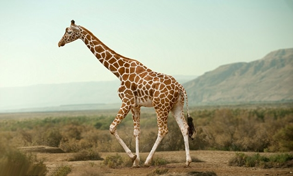

Huơu cao cổ là động vật có vú cao nhất thế giới còn tồn tại, chúng là loài Thú ăn cỏ, thuộc bộ Guốc chẵn và phân bộ Nhai lại. Đặc điểm chính của Huơu cao cổ đó là cổ và chân rất dài, phân bố chủ yếu ở Nam Phi, Niger và Somali, khu vực sống chủ yếu là hoang mạc và rừng thưa và xavan.
Huơu cao cổ sử dụng chiều cao của chúng để có thể với được lá cây và chồi non mà ít động vật khác có thể với tới. Có một điều bạn không biết đó là lưỡi của hươu cao cổ cũng rất dài, càng ra tăng khả năng trong việc nạp năng lượng hàng ngày. Giống như trâu, bò, linh dương, cừu, nai, Huơu..chúng thường ợ thức ăn lên và nhau lại cả ngày. Một con Huơu cao cổ ăn hàng trăm kilogram thức ăn thực vật mỗi tuần, vì vậy hành vi đi lang thang là để thỏa mãn nhu cầu ăn uống. Do sống ở khu vực rừng thưa, xavan nơi trú ngụ của những loài động vật ăn thịt khét tiếng, nên chiều cao của Hươu cao cổ cũng cung cấp cho chúng tầm nhìn tuyệt vời.
Những con Huơu cao cổ cái cũng sẽ gặp khó khăn trong quá trình sinh con, vì chiều dài của đôi chân, khi con non sinh ra, chúng sẽ rơi từ độ cao gần 2 mét xuống đất, những Huơu cao cổ con này thường sẽ tập đứng trong vòng nửa giờ và đi lại, chạy nhảy bình thường trong vòng 10 giờ sau khi được sinh ra.